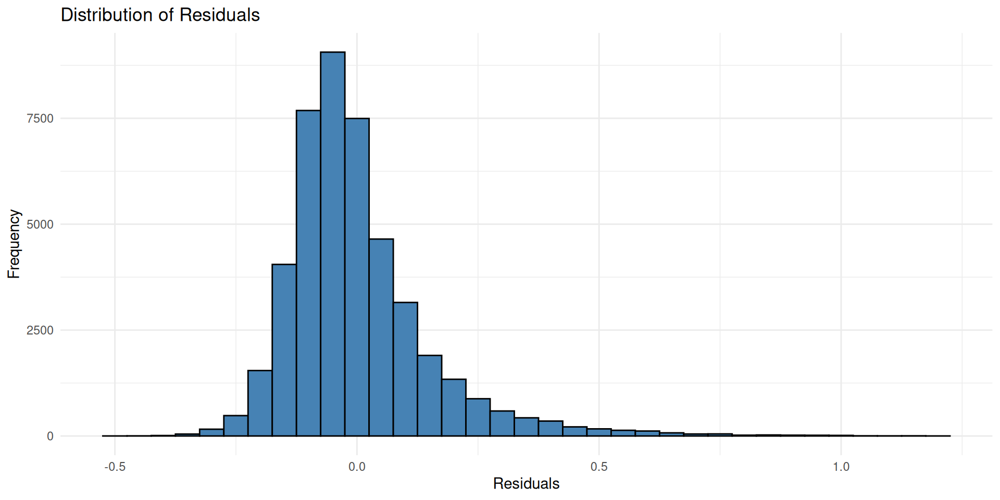

# Define custom hypothesis contrast matrix
contr_matrix <- matrix(c(
1, -1, 0, # Contrast 1: CON vs AGR
0.5, 0.5, -1 # Contrast 2: (CON + AGR) vs DIS
), nrow = 3, dimnames = list(c("CON", "AGR", "DIS"), c("CON_vs_AGR", "CON_AGR_vs_DIS")))
# Apply the generalized inverse to map contrasts onto regression coefficients
contr_matrix_inv <- zapsmall(t(ginv(contr_matrix))) %>%
matrix(nrow = 3, dimnames = list(c("CON", "AGR", "DIS"), c("CON_vs_AGR", "CON_AGR_vs_DIS")))
# Assign to factor Condition
contrasts(flanker_clean$Condition) <- contr_matrix_inv
contrasts(flanker_clean$StimulusType) <- contr.sum(2) # Sum code Gender (-1, 1)
# Filter correct trials for LMM
flanker_rt_data <- flanker_clean %>% filter(corr == 1)Session 1: Frequentist Mixed-Effects Models with lme4
Grammatical Gender Flanker & Gaze-Contingent Boundary Paradigms
Dr. Bernhard Angele
Workshop plan
- Session 1 (today)
- Part 1 Introducing the workshop data sets
- Part 2: Data preprocessing, exclusions, and custom contrast coding
- Part 3: Linear mixed-effects modeling of response times (Gaussian) using
lme4
- Session 2 (tomorrow)
- Part 1 The Bayesian multilevel framework, priors, and response families
- Part 2: Modeling response times with the Gaussian distribution in
brms - Part 3: Using the ex-Gaussian distribution in
brms - Part 4: Model diagnostics, posterior predictive checks, interpretation
Part 1: Introduction to the Workshop Datasets
Parafoveal Processing of Articles in Spanish
Our workshop utilizes a dataset we recently published, exploring how readers process grammatical gender in Spanish:
Experiment 1 from Serrano-Carot et al. (2026) used a word-flanker paradigm to investigate how parafoveal syntactic processing occurs during single-word reading. Participants performed different tasks (Exp 1: grammatical gender categorization, Exp 2: lexical decision, Exp 3: semantic categorization) while being presented with target nouns flanked by either concordant, discordant, or neutral articles. In this session, we will focus on the data from Experiment 1, the grammatical gender categorization task.
Why Study Spanish Articles?
Unlike English, which features a single gender-neutral definite article (the), Spanish has a morphosyntactically rich article system:
- Gender Agreement: el (masculine), la (feminine)
- Number Agreement: los (masculine plural), las (feminine plural)
This rich variation makes Spanish an ideal linguistic test-case for investigating parafoveal syntactic processing (Angele & Rayner, 2013).
The Grammatical Gender Agreement Effect
- Linguistic Rule: Spanish articles must agree in gender and number with the noun they modify (Corbett, 1991).
- Violations: Agreements like *el mesa (masculine article + feminine noun) cause severe cognitive disruption:
- Delayed response times in foveal categorization and lexical decisions (Barber & Carreiras, 2005).
- Distinct neurophysiological ERP signatures, such as the P600 component (Alemán Bañón & Rothman, 2016).
- Core Research Question: Are these syntactically complex agreement rules processed parafoveally before fixating the noun?
Dataset: Grammatical Gender Flanker (Exp 1)
- Source Study: Serrano-Carot et al. (2026)
- Task: Noun grammatical gender decision task. Participants decide if a target noun (e.g., mesa, feminine; sol, masculine) is masculine or feminine.
- Flanker Design: The target noun is flanked by articles that are either:
- Concordant (
AGR): Flankers agree in gender (e.g., la mesa la). - Discordant (
DIS): Flankers mismatch in gender (e.g., el mesa el). - Control (
CON): Non-gender characters flanking the noun.
- Concordant (
- Key Outcomes: Response Time (
rtin seconds) and Response Accuracy (corr: 1 = correct, 0 = incorrect).
Flanker Paradigm: Conditions
Control (CON):
+
mesa
mesa
✅
❌
No flankers (target presented on its own).
Concordant (AGR):
+
la mesa la
mesa
✅
❌
Flankers agree in grammatical gender.
Discordant (DIS):
+
el mesa el
mesa
✅
❌
Flankers violate gender agreement.
Section 2: Data Preprocessing & Custom Contrasts
Introduction to the Tidyverse
We will use the tidyverse ecosystem for all data preprocessing, cleaning, and visualization.
- What is it? An opinionated collection of modern R packages designed for data science.
- Why use it?
- Packages share a common philosophy, design token, and grammar.
- Expressive syntax (
%>%pipe operator) that reads like a sequence of actions. - Highly efficient for transforming messy experimental logs into analysis-ready data frames.
- Core Packages in Our Workflow:
readr: Fast, friendly reading of CSV files.dplyr: Data manipulation verbs likefilter(),mutate(), andselect().ggplot2: Data visualization based on the grammar of graphics.
Flanker Experiment Dataset Structure
The raw dataset data/exp1_data_for_analysis.csv contains trial-level experimental logs:
| Column | Type | Description | Example |
|---|---|---|---|
subject |
integer | Unique subject index | 1 |
Target |
character | Target noun presented on the screen | "mesa" |
Condition |
character | Flanker condition (CON, AGR, DIS) |
"AGR" |
StimulusType |
character | Target grammatical gender (MAS or FEM) |
"FEM" |
rt |
numeric | Reaction time in seconds | 0.3273 |
corr |
integer | Accuracy (1 = correct, 0 = incorrect, -1 = timeout) |
1 |
Flanker |
character | Specific article flanking the noun | "la" |
Step 1: Preprocessing the Flanker Data
Before fitting models, we must apply standard exclusions to filter out noise:
- Timeout Exclusions: Exclude trials where participants timed out (
corr == -1). - Physiological Plausibility Window: Retain manual reaction times strictly between \(250\text{ ms}\) and \(1800\text{ ms}\) (\(0.25\text{s} - 1.8\text{s}\)).
- Counterbalancing & Subject Factors: Cast key variables (Subject, Target Word, Condition, Gender) as clean factors in R.
Loading & Cleaning in R
Step 2: Contrast Coding
We have three levels in Condition (CON, AGR, DIS). We need to think about what comparisons are the most interesting for us theoretically. In this case, we care mainly about the impact of the discordant flankers (DIS) compared to the other two conditions. We also wonder whether the concorndant flanker has a facilitation effect compared to the control (CON).
- Why don’t we just use the default treatment contrasts? They would compare each level to a baseline (e.g.,
CON). This would not be terrible, but we would lose out on the direct comparison betweenAGRandDIS, which is where we would expect the largest difference if the flankers are indeed processed parafoveally. In this case, we decide to use custom contrasts to examine the effect of the discordant flanker compared to the concordant and control conditions (i.e., we test the hypothesis that \(\frac{AGR+CON}{2} - DIS = 0\)) and and the effect of the concordant flanker compared to the control (\(AGR - CON = 0\)).
Custom Contrast Coding
We define a custom contrast matrix to test:
- CON vs AGR (Facilitation): Does a concordant flanker help compared to a neutral control? \(1 \cdot AGR - 1 \cdot CON + 0 \cdot DIS = 0\)
- CON & AGR vs DIS (Interference): Does a discordant flanker slow down processing compared to the other conditions? \(0.5 \cdot AGR + 0.5 \cdot CON - 1 \cdot DIS = 0\)
- We can specify this contrast matrix in the differences format:
| Condition | CON vs AGR | (CON & AGR) vs DIS |
|---|---|---|
| CON | -1 | 0.5 |
| AGR | 1 | 0.5 |
| DIS | 0 | -1 |
Stimulus Type
- We might also want to test whether there is a difference in processing between masculine and feminine nouns. We can use sum contrasts for this factor, which will compare each level to the grand mean (i.e.,
MASvsFEM). For this, we can use the R commandcontr.sum(2)and don’t have to worry about the general inverse. The contrast will automatically be correctly coded asMAS = 1andFEM = -1.
Orthogonality of Contrasts
- Why did we use the specific custom contrasts for
Conditionand sum contrasts forStimulusType?- This ensures that all the contrasts are orthogonal (i.e., uncorrelated). When we use correlated predictors in a regression model, this can reduce both the interpretability and statistical power of our model.
- If the model includes interactions, non-orthogonal contrasts can lead to high degrees of multicollinearity, which can inflate standard errors and make it difficult to detect significant effects. By using orthogonal contrasts, we can ensure that each contrast tests a unique aspect of the data without overlap.
Contrast Setup in R
Why the generalized inverse?
There are two ways to specify contrasts in R: the differences format (where each row corresponds to a condition and columns correspond to contrasts) and the regression format (where each column corresponds to a regression coefficient). The
contrasts()function in R expects the regression format, so we use the generalized inverse (ginv()) from theMASSpackage to convert our differences contrast matrix into the appropriate regression format.We could specify the contrasts directly in regression format, but using the differences format is often more intuitive when designing contrasts based on theoretical hypotheses.
t()transposes the matrix (rows to columns and vice versa), andzapsmall()is used to clean up any very small numerical values that may arise from the calculation (rounding errors).For a detailed explanation of contrast coding and the use of the generalized inverse, see Schad et al. (2020).
Section 3: Mixed-Effects Modeling: RT & Accuracy
Why do we need mixed-effects models here?
Independence assumptions of traditional ANOVA are violated in our experimental design:
Repeated Measures: Each participant contributes multiple trials. All measurements from the same participant share variance and are not independent.
Crossed Items: Target words are repeated across subjects. Measurements from the same item may also share variance and not be independent.
The Language-as-fixed-effect fallacy: ANOVAs can only model one source of random variability (e.g., subjects or items), but not both simultaneously (Clark, 1973). This can lead to inflated Type I error rates and incorrect inferences about our fixed effects (Raaijmakers et al., 1999).
Fit the full random effects structure
- Important note: Unlike repeated measures ANOVAS, linear mixed models allow us to specify which random effects of subject or item we want to include. We can include:
- Random Intercepts: Account for baseline differences in response times across subjects and items (the “main” effect of subject/item).
- Random Slopes: Account for how the effect of our experimental conditions (e.g., Condition, StimulusType) may vary across subjects and items. For example, some subjects may show a larger flanker effect than others, and some items may be more affected by the flanker manipulation than others. This is the “interaction” of subject/item with our fixed effects.
- The equivalent of an F1 ANOVA is not an LMM with only random subject intercepts. It is an LMM with random intercepts and slopes for subjects. If we do not include random slopes, but there are random effects in the data, these may be confounded with fixed effects, inflating Type I error rates (Barr et al., 2013).
Problems with maximal random effects structures in lme4
- Convergence Issues: If there are no systematic random effects in the data, the model may fail to converge instead of estimating a variance of zero. However, a failure to converge does not necessarily mean that there is no random effect in the data.
- Power Issues: Even if the model converges, it may require a substantially larger sample size to detect fixed effects while also estimating a complex random effects structure. This can lead to Type II errors (failing to detect a true effect, Matuschek et al., 2017).
Fitting LMM in R (Command)
We fit a linear mixed-effects model on correct trials, modeling reaction times (rt) as a Gaussian outcome using the lme4 package.
- Question: Why do we include StimulusType as a random slope for subjects but not items?
- Because each item only has one gender!
This does not converge!
- What to do?
- Simplify the random effects structure. We can start by removing correlations between random effects using the double-pipe syntax
||inlme4. This will allow the model to estimate variances for each random effect without estimating correlations between them. Since the correlations will often be close to zero, this can help with convergence without losing much information about the random effects structure.
Still does not converge!
- Now we can systematically remove random slopes that we suspect have low variance (e.g., target item slopes) while retaining slopes directly tied to our primary hypothesis (e.g., Condition slopes for subjects). This is a common approach to achieve convergence while still modeling the most important sources of random variability in the data.
- Note that we cannot use
||in the(1 | item)term since there is only one random effect here.
This converges!
We inspect the results using summary(m_rt) to retrieve the parameters and statistics:
Linear mixed model fit by REML ['lmerMod']
Formula: rt ~ Condition * StimulusType + ((1 | subject) + (0 + Condition |
subject)) + (1 | item)
Data: flanker_rt_data
REML criterion at convergence: -41635.3
Scaled residuals:
Min 1Q Median 3Q Max
-3.3033 -0.6066 -0.1938 0.3696 8.0358
Random effects:
Groups Name Variance Std.Dev. Corr
item (Intercept) 6.417e-04 0.025332
subject ConditionCON 6.691e-03 0.081796
ConditionAGR 6.998e-03 0.083657 1.00
ConditionDIS 1.066e-02 0.103268 0.96 0.96
subject.1 (Intercept) 2.349e-05 0.004846
Residual 2.240e-02 0.149661
Number of obs: 44739, groups: item, 450; subject, 109
Fixed effects:
Estimate Std. Error t value
(Intercept) 0.5057060 0.0086211 58.659
ConditionCON_vs_AGR -0.0035820 0.0017379 -2.061
ConditionCON_AGR_vs_DIS -0.0513762 0.0035503 -14.471
StimulusType1 0.0062139 0.0013888 4.474
ConditionCON_vs_AGR:StimulusType1 0.0005329 0.0017246 0.309
ConditionCON_AGR_vs_DIS:StimulusType1 0.0008896 0.0015122 0.588
Correlation of Fixed Effects:
(Intr) CnCON__AGR CnCON_AGR__DIS StmlT1 CCON__AGR:
CndCON__AGR -0.093
CnCON_AGR__DIS -0.517 -0.005
StimulsTyp1 -0.001 -0.002 0.001
CCON__AGR:S 0.000 -0.012 -0.001 0.004
CCON_AGR__DIS: 0.000 -0.002 -0.007 -0.009 0.006 Interpreting the model output:
- Fixed Effects Estimates (\(b\)): Coefficients representing the influence of Condition and Gender (StimulusType) on response times.
- Random Effects Variances: Subject-level and Item-level standard deviations.
- Optimizer Checks: Verify model convergence and inspect fit statistics.
- Correlation matrix: Check for correlations between fixed effects. High correlations (|r| > 0.7) can indicate multicollinearity.
Interpreting the results:
- Main Effect of Condition:
- Contrast 1: Significant negative \(b\) for
CON_vs_AGRindicates that the concordant flanker condition leads to faster response times compared to the control, consistent with a facilitation account. - Contrast 2: Significant negative \(b\) for
CON_AGR_vs_DISindicates that the discordant flanker condition leads to slower response times compared to the other conditions, consistent with an interference account.
- Contrast 1: Significant negative \(b\) for
- Main Effect of StimulusType: Significant positive \(b\) for
StimulusTypeindicates that masculine nouns (coded as 1) are processed slower than feminine nouns (coded as -1). - Interaction: No significant interaction terms suggests that the flanker effects do not differ between masculine and feminine nouns.
Issues with this model:
- Normality of residuals may be violated due to the right-skewed distribution of response times.
- Let’s have a look at the distribution of the residuals:

Normality of Residuals
- This does not look like a normal distribution, which violates the assumptions of the linear mixed model. We could try to log-transform the response times to see if that helps with normality, but this can make interpretation more difficult and may not fully address the issue of skewness (Lo & Andrews, 2015).
- We will address this in the next session using Bayesian modeling with
brmsand ex-Gaussian distributions.
Summary of Session 1
- We introduced a dataset from a flanker experiment that investigates parafoveal processing of articles with concordant or discordant grammatical gender in Spanish.
- We applied standard preprocessing steps to clean the data and defined custom contrasts to test our specific hypotheses about the effects of the flanker conditions.
- We were unable to fit a maximal random effects structure due to convergence issues, which is a common problem in
lme4. We simplified the random effects structure while retaining the most important random slopes related to our primary hypotheses.
Summary of Session 1 (continued)
- The fitted model revealed significant facilitation effects for the concordant flankers and significant interference effects for the discordant flankers, as well as a main effect of stimulus type.
- There were issues with our fitted model: we were not able to fit the maximal random effects structure, and the residuals of the model were not normally distributed due to the skewed distribution of response times. We will address these issues in the next session using Bayesian modeling with
brmsand ex-Gaussian distributions.
Homework for Session 2
- Find a data set from your own research or from the literature that you would like to analyze using linear mixed models. It should ideally have a similar structure to the flanker dataset (i.e., repeated measures with crossed random effects of subjects and items).
- Follow the same preprocessing steps we applied to the flanker data (e.g., data cleaning, applying contrast coding) and fit a linear mixed model using
lme4. Try to include a maximal random effects structure and see if it converges. If not, try simplifying the random effects structure while retaining the most important random slopes.
References
Alemán Bañón, J., & Rothman, J. (2016). The role of morphological markedness in the processing of number and gender agreement in spanish: An event-related potential investigation. Language, Cognition and Neuroscience, 31(10), 1273–1298. https://doi.org/10.1080/23273798.2016.1218032
Angele, B., & Rayner, K. (2013). Processing the in the parafovea: Are articles skipped automatically? Journal of Experimental Psychology: Learning, Memory, and Cognition, 39(2), 649–662. https://doi.org/10.1037/a0029294
Barber, H., & Carreiras, M. (2005). Grammatical gender and number agreement in spanish: An ERP comparison. Journal of Cognitive Neuroscience, 17(1), 137–153. https://doi.org/10.1162/0898929052880101
Barr, D. J., Levy, R., Scheepers, C., & Tily, H. J. (2013). Random effects structure for confirmatory hypothesis testing: Keep it maximal. Journal of Memory and Language, 68(3), 255–278. https://doi.org/10.1016/j.jml.2012.11.001
Clark, H. H. (1973). The language-as-fixed-effect fallacy: A critique of language statistics in psychological research. Journal of Verbal Learning and Verbal Behavior, 12(4), 335–359.
Corbett, G. G. (1991). Gender. Cambridge University Press.
Lo, S., & Andrews, S. (2015). To transform or not to transform: Using generalized linear mixed models to analyse reaction time data. Frontiers in Psychology, 6, 1171.
Matuschek, H., Kliegl, R., Vasishth, S., Baayen, H., & Bates, D. (2017). Balancing Type I error and power in linear mixed models. Journal of Memory and Language, 94, 305–315.
Raaijmakers, J. G., Schrijnemakers, J. M., & Gremmen, F. (1999). How to deal with “the language-as-fixed-effect fallacy”: Common misconceptions and alternative solutions. Journal of Memory and Language, 41(3), 416–426.
Schad, D. J., Vasishth, S., Hohenstein, S., & Kliegl, R. (2020). How to capitalize on a priori contrasts in linear (mixed) models: A tutorial. Journal of Memory and Language, 110, 104038. https://doi.org/https://doi.org/10.1016/j.jml.2019.104038
Serrano-Carot, M., Gomez, P., & Angele, B. (2026). Articles as flankers: The effect of grammatical gender depends on the task. Language, Cognition and Neuroscience, 0(0), 1–23. https://doi.org/10.1080/23273798.2026.2657830